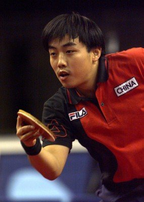
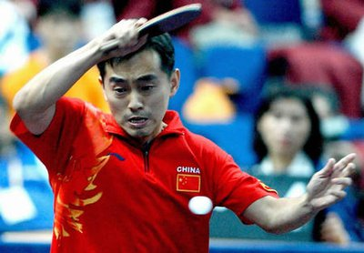

| 20世纪末中国乒乓球的大爆发 |
| 20世纪末的中国乒乓球在经历了80年代的辉煌与男队的短暂波折后，于90年代中后期重新确立了世界霸主的地位。这一时期以刘国梁、孔令辉、邓亚萍等巨星为代表，技术打法上实现了传统与创新的成功结合，在世乒赛和奥运会上取得了辉煌成就。同时，这也是一个为应对未来国际竞争格局变化和规则改革进行准备与调整的时期，为中国乒乓球在21世纪的持续辉煌奠定了坚实的基础。 | |
|  |  |
| 刘国梁：作为中国首位男子“大满贯”得主（1996年世界杯、1996年奥运会、1999年世锦赛），他代表了直拍正胶快攻打法的最后辉煌，其出色的发球和前三板技术堪称典范 | 孔令辉：与刘国梁并称“双子星”，他在1995年世乒赛男单夺冠，并于2000年悉尼奥运会完成“大满贯”。他的横拍弧圈结合快攻打法技术全面、风格稳健，代表了当时世界乒坛的先进潮流。 |
| 返回 | 上一页 | 下一页 |